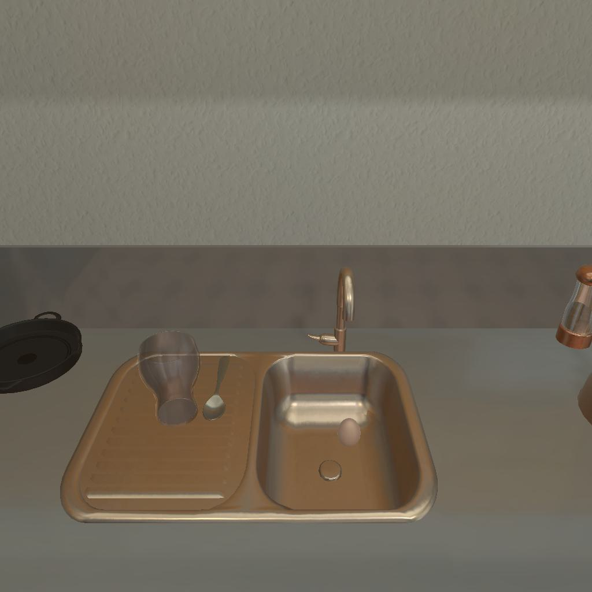
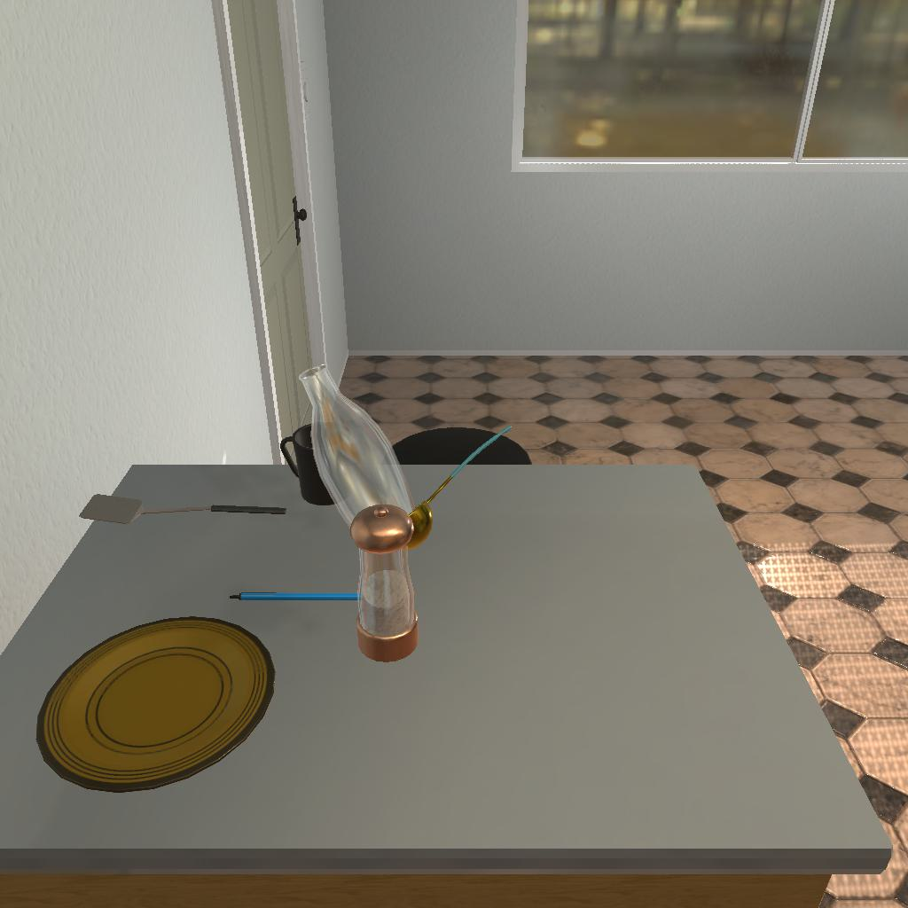

---------------------------------------------------------task: 22---------------------------------------------------------
--------------------------------------------------------------------------------------------------------------------------------------------------------------------
--------------------------------------------------------------------------------------------------------------------------------------------------------------------
Step:--------------------------------------------------------------------------10-------------------------------------------------------------------------------
----------------------------------------
VLM Prompt:
Image1:
Image2:
**Instruction**
1. Analyze the provided images to identify all visible household objects and compare the difference between images (e.h. whether the object is opened or not and taken on hand or not), focusing on those relevant to the task description "put a hot egg in countertop."
2. Use the analysis of images and the task hint "The agent must find an object of the desired type, pick it up, go to a microwave, heat the object with the microwave, then find the correct location to place it, and put it down there. The agent does not need to use the microwave button or open the microwave to heat the object, and the agent just needs to do action that is "heat the object with the microwave"." to answer the question: what is the most reasonable action in the choices for the task description "put a hot egg in countertop"?
3. Decide and write the answer using the template: The answer is: (i): , where i is the real number. If there is no desired object in images, search every place based on **Initial Observation** to find the object. And if no one is exactly correct, choose a similar answer.
**Initial Observation**
You are in the middle of a room. Looking quickly around you, you can see cabinet (1-18), countertop (1-4), sink (1), drawer (1-7), sinkbasin (1), coffeemachine (1), microwave (1), garbagecan (1), stoveburner (1-4), toaster (1), fridge (1)
**Answer Choices**
(1): go to cabinet 1
(2): go to cabinet 2
(3): go to countertop 1
(4): go to cabinet 4
(5): go to cabinet 5
(6): go to sink 1
(7): go to cabinet 6
(8): go to drawer 1
(9): go to drawer 2
(10): go to cabinet 7
(11): go to cabinet 8
(12): go to coffeemachine 1
(13): go to microwave 1
(14): go to cabinet 9
(15): go to countertop 2
(16): go to cabinet 10
(17): go to drawer 3
(18): go to drawer 4
(19): go to garbagecan 1
(20): go to drawer 5
(21): go to cabinet 11
(22): go to cabinet 12
(23): go to cabinet 13
(24): go to cabinet 14
(25): go to stoveburner 1
(26): go to countertop 3
(27): go to stoveburner 2
(28): go to stoveburner 3
(29): go to stoveburner 4
(30): go to drawer 6
(31): go to cabinet 15
(32): go to cabinet 16
(33): go to cabinet 17
(34): go to cabinet 18
(35): go to toaster 1
(36): go to drawer 7
(37): go to fridge 1
(38): take plate 1 from countertop 4
(39): take glassbottle 1 from countertop 4
(40): take saltshaker 1 from countertop 4
(41): take spatul2 from countertop 4
(42): take mug 1 from countertop 4
(43): take ladle 1 from countertop 4
(44): take pen 2 from countertop 4
(45): take lightswitch 1 from countertop 4
(46): examine countertop 4
**Answer**
Let's think step by step by following the instructions.
----------------------------------------
----------------------------------------
Original Response:
Image Analysis:
- Image1 shows a sink with a metal drying area and two objects that appear to be a mug and a spoon. There is also an egg on the drying area.
- Image2 shows a countertop with various items, including a plate, a glass bottle, a salt shaker, a spatula, a mug, a ladle, and a pen. There is also a visible microwave and a fridge.
According to the task description and hint, the agent needs to heat an egg with the microwave and then place it on the countertop. In Image1, we can see an egg on the drying area next to the sink, which suggests this egg is the object that needs to be heated.
Now, looking at the answer choices, the agent first needs to take the egg from its current location. The egg is on the drying area of the sink, which is not listed as an option in the answer choices. The closest relevant action would then be to go to the sink to pick up the egg before heating it in the microwave and placing it on the countertop.
The answer is: (6): go to sink 1
----------------------------------------
----------------------------------------
>>> Refine Original VLM Response and Get Pure Action: go to sink 1
----------------------------------------
-----------------------------------------------------------------
Running time: 8.966649770736694 seconds
Total Money: 11.239290000000002
-----------------------------------------------------------------
-----------------------------------------------------------------
Text Observation:You arrive at loc 6. On the sink 1, you see a pan 1, a cup 1, a peppershaker 1, a faucet 1, a spoon 1, a egg 1, and a kettle 1.
-----------------------------------------------------------------
UNSUCCEED